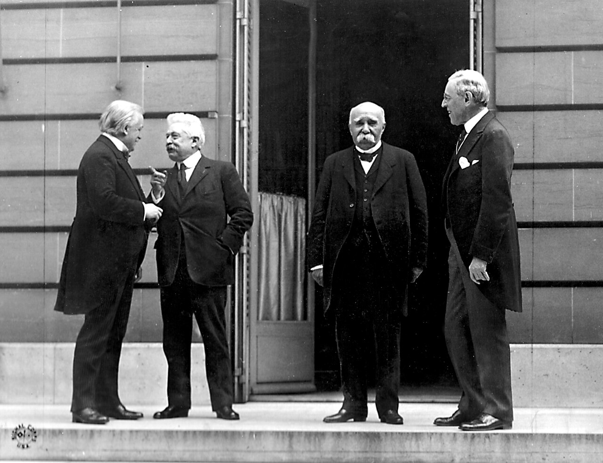
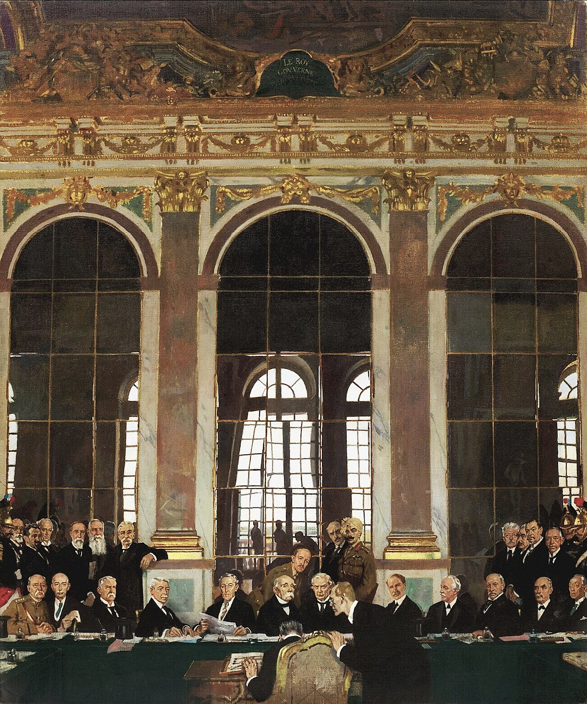

Directions: Your class is staffing a Senate hearing on the Treaty of Versailles in the fall of 1919. Work all four stations, which present the four positions in the fight, and answer every question. Then, in Part 3, draft the compromise your committee could have offered, compare it with the votes the Senate actually took, and write the closing paragraph on your own.
Source: Woodrow Wilson, "Fourteen Points," address to Congress, January 8, 1918 (Miller Center edition; TPSP audited record). Points I and XIV are quoted in full. The remaining points are summarized below the quotations.

Point I: "Open covenants of peace, openly arrived at, after which there shall be no private international understandings of any kind but diplomacy shall proceed always frankly and in the public view."
Point XIV: "A general association of nations must be formed under specific covenants for the purpose of affording mutual guarantees of political independence and territorial integrity to great and small states alike."
Summary of the other points: freedom of the seas, lower trade barriers, reduced armaments, a fair adjustment of colonial claims, German withdrawal from Russia, Belgium, and France, and an independent Poland.
1. What practice does Point I forbid, and what kind of wartime diplomacy was Wilson answering?
2. Under Point XIV, what would the association guarantee, and to which states?
Source: Treaty of Versailles, Article 231, and Covenant of the League of Nations, Article 10 (Avalon Project, Yale Law School; TPSP audited records). Both are quoted in full below. Article 232 is summarized.

Article 231: "The Allied and Associated Governments affirm and Germany accepts the responsibility of Germany and her allies for causing all the loss and damage to which the Allied and Associated Governments and their nationals have been subjected as a consequence of the war imposed upon them by the aggression of Germany and her allies."
Article 10 of the Covenant: "The Members of the League undertake to respect and preserve as against external aggression the territorial integrity and existing political independence of all Members of the League."
Summary of Article 232: Germany could not pay for all the loss and damage, but it undertook to compensate the Allies for damage done to civilians and their property. A Reparation Commission would determine the amount.
1. What does Article 231 require Germany to accept, and what payment obligation does that acceptance support?
2. If the United States joined the League under Article 10 as written, what would it promise, and what constitutional question does that promise raise?
Source: Reservation 2 of the Senate Foreign Relations Committee reservations to the Treaty of Versailles, Congressional Record, November 19, 1919. Cuts are marked with ellipses. The other reservations are summarized below.
Reservation 2: "The United States assumes no obligation to preserve the territorial integrity or political independence of any other country ... under the provisions of Article 10, or to employ the military or naval forces of the United States under any article of the treaty for any purpose, unless in any particular case the Congress ... shall by act or joint resolution so provide."
Summary of other reservations: the United States would be the sole judge of whether it had met its obligations before withdrawing from the League; it would accept no League mandate except by act of Congress; and questions within its domestic jurisdiction, including immigration and the tariff, would not be submitted to the League at all.
1. What single condition does Reservation 2 place on every obligation the United States might have under Article 10?
2. How is the Lodge position different from rejecting the treaty outright? Name one thing it keeps and one thing it removes.
Source: Senator William E. Borah of Idaho, speech against the League of Nations, United States Senate, November 19, 1919 (Congressional Record). The sentence below is quoted. Borah's wider argument is summarized.
Borah: "My objections to the League have not been met by the reservations." Stating his own position, Borah quoted Abraham Lincoln's instruction before the Civil War: "Entertain no compromise; have none of it."
Summary: Borah argued that membership itself was the problem. Once American representatives sat in the League's council and assembly, the United States would be bound in honor to accept their judgments on disputes anywhere in the world. Reservations written on paper could not remove that obligation, and joining would surrender the independence the country had kept since its founding. About a dozen senators, called irreconcilables, held this position and voted against the treaty in every form.
1. Why, in Borah's argument, do the Lodge reservations fail to answer his objection?
2. What would the irreconcilables do to any compromise between Wilson and Lodge, and why does that matter for reaching two thirds of the Senate?
Working as the hearing committee, draft the settlement you believe could have been offered in the fall of 1919. Be specific. A compromise that changes nothing is not a compromise.
1. Your Article 10 clause. Write the wording on the United States obligation that your committee would accept:
2. What Wilson's side gives up, and what Lodge's side gives up:
3. Would the irreconcilables vote for your compromise? Would Wilson order Democrats to support it? Answer both, with a reason for each.
What happened: On November 19, 1919, the Senate rejected the treaty with the Lodge reservations, 39 to 55, and then rejected the treaty without reservations, 38 to 53. Wilson had suffered a stroke on October 2 and, from his sickroom, ordered Democrats to vote against the reserved version. On March 19, 1920, the treaty with the Lodge reservations received 49 votes to 35, a majority, but ratification required two thirds of the Senate. The United States never ratified the treaty and never joined the League of Nations.
4. How does your compromise compare with the version that failed in March 1920? Which bloc was hardest to satisfy, Wilson's Democrats, Lodge's reservationists, or the irreconcilables, and what in the record proves it?
Closing task: Write the vote you would have cast as a senator in March 1920: for the treaty with the Lodge reservations, for the treaty without reservations, or against both. Defend your vote with one document from two different stations.
1. What practice does Point I forbid, and what kind of wartime diplomacy was Wilson answering? It forbids private international understandings: secret agreements between governments. Wilson was answering the secret treaties and closed diplomacy that he and many others blamed for drawing nations into the war.
2. Under Point XIV, what would the association guarantee, and to which states? Mutual guarantees of political independence and territorial integrity, extended to great and small states alike.
1. What does Article 231 require Germany to accept, and what payment obligation does it support? Germany accepts responsibility for causing all the loss and damage of the war, charged to the aggression of Germany and her allies. That acceptance is the basis for reparations: under Article 232 Germany undertook to compensate the Allies for damage to civilians and their property, in an amount a Reparation Commission would set.
2. What would the United States promise under Article 10, and what constitutional question follows? It would undertake to respect and preserve the territorial integrity and political independence of all League members against external aggression. The question is who commits the United States to act, and possibly to war: the League through the treaty, or Congress, which holds the constitutional power to declare war.
1. What single condition does Reservation 2 place on every Article 10 obligation? Action by Congress in each particular case, by act or joint resolution. Without it, the United States assumes no obligation to preserve another country's territory or independence and no obligation to employ its military or naval forces under the treaty.
2. How is the Lodge position different from rejecting the treaty outright? It keeps ratification and League membership, on conditions. It removes the automatic character of the Article 10 guarantee, making any American action depend on a separate decision of Congress.
1. Why do the reservations fail to answer Borah's objection? Borah objected to membership itself. In his argument, once American representatives sat in the League's council and assembly, the United States would be bound in honor by their judgments, whatever the reservations said. Only staying out answered the objection.
2. What would the irreconcilables do to any compromise, and why does it matter? Vote against it, as they voted against every version. Because ratification needed two thirds of the Senate, a bloc opposed on principle meant any successful version had to unite nearly all of the remaining senators, which made Wilson's bloc and Lodge's bloc each able to kill a version the other would accept.
Full credit should be awarded if the committee:
Full credit should be awarded if the student: